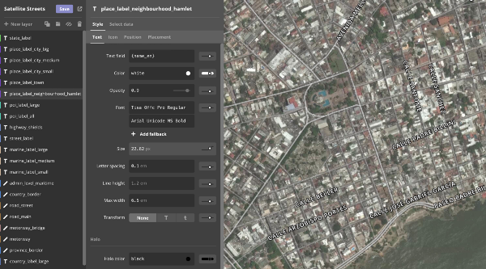

The new Mapbox Studio just went to private beta today. Here’s what I’ve learned using it.
I just hope I can start playing with the new @mapbox editor ASAP. it looks nice guys! Maps everywhere!
— saleiva (@saleiva) September 17, 2015
There’s a lot of marketing behind the new Mapbox Studio, along with a glowing review in Wired. I’ve been fortunate enough to be able to play with it for a few months now as it developed, and the Mapbox team should be proud.
The good
It’s a flexible adaptation of fast vector tile technology to WebGL, which is already powering Google’s maps and represents the next generation of how we see geographic data in our daily lives. It also carries over what I loved about the previous iteration of the platform:
The world’s data is at your fingertips, and the old adage — that 90% of a cartographer’s job is data-wrangling — is no longer true.

The new cartographic interface
Using the new Mapbox Studio, I was able to quickly and painlessly adapt the Faraday basemap style to MapboxGL. It was even easy to include our application fonts. The result is such a different paradigm from raster tiles that I could spend hours just watching it, exploring the rendering and trying to absorb it. I suspect it’ll be many more months before this ceases to feel novel.

Flying around Seattle
But I’m a cartographer; overanalyzing the feel of a map is what I do. The real test of the new platform will be how developers take to it, and how users react. [It might actually be a positive indicator if users don’t react at all.]
Maturity needed
I’ve found that some roadblocks remain to using maps produced in the new Mapbox Studio in production on the Faraday platform. There are still bugs in the rendering of layered labels, and for a complex system of panes and API hooks like ours, the mapbox-gl.js library is not a complete replacement for the LeafletJS-based mapbox.js.
The support architecture for the new Mapbox Studio is not yet as robust as what it seeks to replace — just count the number of examples available in the crucial Mapbox documentation: 18 for MapboxGL vs. > 200 for MapboxJS. I’m not alone in using those examples to guide my adoption of web mapping tools — I owe them a lot, actually, and I think they’ve helped a lot of developers gravitate toward Mapbox’s offerings. The new rendering engine needs more wayfinding on markers, layers, drawings and the whole range of user expectations.
If I’m the target audience for the new Mapbox Studio, their job is done. Its fun, beautiful and fast. But the rest of Faraday’s engineers— and application developers in general — may need more functionality before they can jump onboard.